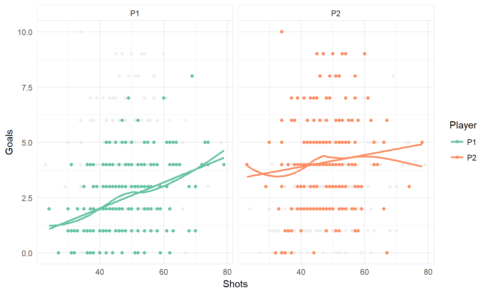

STAT 541 Final Project
Scott Graham
December 06, 2017
\[ \newcommand{\Prob}{\operatorname{P}} \newcommand{\E}{\operatorname{E}} \newcommand{\Var}{\operatorname{Var}} \newcommand{\Cov}{\operatorname{Cov}} \newcommand{\se}{\operatorname{se}} \newcommand{\re}{\operatorname{re}} \newcommand{\ybar}{{\overline{Y}}} \newcommand{\phat}{{\hat{p}}} \newcommand{\that}{{\hat{T}}} \newcommand{\med}{{\tilde{Y}}} \newcommand{\Logit}{{\operatorname{Logit}}} \]
Introduction
Data
This data set contains the results of 217 games played in the video games NHL 12, 13, and 17, played between 2 friends, Tim and Randy (P1 and P2 respectively)1. They compiled a incredibly detailed gamelog for each game played, with well over 50 variables recorded, and period by period breakdowns. For those not familiar, the NHL series of video games is developed by EA Sports, and serves as the most readily available means of simulating real NHL.2 While obviously not perfect, it serves as a decent proxy for predicting the results of hockey games in general, as many of the same principles apply.
Since the outcome of a game is determined by the end score, any variables referencing the goals scored have been removed, as they serve little to know interest in the prediction of games. However there is one exception, and that is who scored the first goal of the game, which in itself seemed to be an interesting possible predictor. Instead more periphery statistics will be looked at, such as hits, shots, face off percentage, breakaways, penalties, and other such things. As well, a 1 game lagged result term has been included, to see if any autocorrelation exists within the results, and if it plays a significant role in the prediction process.
Analysis
In this report, a Binomial and Log Linear LASSO model will be used in the variable selection and coefficient estimation process, in addition to the usual step wise methods. As previously mentioned, the autocorrelation of the results will also be examined to see if such an effect exists. Finally a variety of visual tools will be used in the exploratory analysis portion of the paper, in an effort to understand the relationships within the data.
For the LASSO model, the package glmnet is used, to perform an elastic-net version of the LASSO model3. All the data cleaning is done with the usage of a variety of packages from the “tidyverse”. This includes the packages dplyr, tidyr, magrittr, and tibble.4 As well, the flatr package is used to transform contingency tables into “tidy” data frames, where each variable has its own column for each observation. flatr was created by myself in an effort to simplify some of the cleaning done for this course. Finally ggplot2 is used as the primary visualization method, due to its flexibility in creating visualizations, and overall better appearance than base graphics.
Research Question
What periphery (non-goal related) statistics can be used to predict the outcome of a hockey game?
Exploratory Analysis
Correlation Matrix

Distribution of Goals

Goal Distribution by Version

Goals vs. Shots
“You miss 100% of the shots you don’t take.” - Wayne Gretzky

Goals vs. Shots Results
- P1 should shoot the puck more often, as his expected goals will rise at a faster rate than P2’s
- P2 shouldn’t worry as much about getting lots of shots, but primarily focus on getting high danger chances (chances close to the net)
Autocorrelation
Autocorrelation measures the correlation between \(\left(X_{t-k}, X_{t}\right), t=k, k+1\dots,n\). It is primarily used in timeseries analysis to measure the tendency for a time series to be mean reverting (negative autocorrelation) or a tendency to go on long runs in one direct or the other (positive autocorrelation). This is primarily used in the analysis of stock returns, but can be applied to any time series.
Autocorrelation Plot

Autocorrelation Model
\[ \operatorname{Logit}\left( \text{P1 Wins} \right) = \alpha + \beta_{1}\text{Previous Game's Result} \]
##
## Call:
## glm(formula = `P1 Win` ~ `P1 Previous Game`, family = binomial,
## data = .)
##
## Deviance Residuals:
## Min 1Q Median 3Q Max
## -0.8677 -0.6905 -0.6905 -0.6905 1.7610
##
## Coefficients:
## Estimate Std. Error z value Pr(>|z|)
## (Intercept) -1.3122 0.1904 -6.891 5.55e-12 ***
## `P1 Previous Game`Yes 0.5294 0.3568 1.484 0.138
## ---
## Signif. codes: 0 '***' 0.001 '**' 0.01 '*' 0.05 '.' 0.1 ' ' 1
##
## (Dispersion parameter for binomial family taken to be 1)
##
## Null deviance: 236.11 on 215 degrees of freedom
## Residual deviance: 233.98 on 214 degrees of freedom
## (1 observation deleted due to missingness)
## AIC: 237.98
##
## Number of Fisher Scoring iterations: 4Durbin-Watson Test
\[ H_{0}: \text{Autocorrelation} = 0 \] \[ H_{1}: \text{Autocorrelation} \neq 0 \]
##
## Durbin-Watson test
##
## data: hockey_acf_logit
## DW = 2.024, p-value = 0.8647
## alternative hypothesis: true autocorrelation is not 0Modeling
Contingency Table Model
## , , Home = P1
##
## Winner
## Scored_1st P1 P2
## P1 12 12
## P2 4 23
##
## , , Home = P2
##
## Winner
## Scored_1st P1 P2
## P1 25 35
## P2 10 96flatten_ct
| Scored_1st | Winner | Home |
|---|---|---|
| P1 | P1 | P1 |
| P1 | P1 | P1 |
| P1 | P1 | P1 |
| P1 | P1 | P1 |
| P1 | P1 | P1 |
| P1 | P1 | P1 |
| Scored_1st | Winner | Home | n |
|---|---|---|---|
| P1 | P1 | P1 | 12 |
| P1 | P1 | P2 | 25 |
| P1 | P2 | P1 | 12 |
| P1 | P2 | P2 | 35 |
| P2 | P1 | P1 | 4 |
| P2 | P1 | P2 | 10 |
| P2 | P2 | P1 | 23 |
| P2 | P2 | P2 | 96 |
Regression Models and Goodness of Fit Tests
Logit Model
\[ \operatorname{Logit}\left( \text{P1 Wins} \right) = \alpha + \beta_{1}\text{Scored First} + \beta_{2}\text{Home Team} \]
Log Linear Model
\[ \ln(\mu) = \alpha + \beta_{1}\text{Scored First} + \beta_{2}\text{P1 Wins} + \beta_{3}\text{Home Team} \]
Regression Models and Goodness of Fit Tests Outputs
##
## Call:
## glm(formula = Winner ~ Scored_1st + Home, family = binomial,
## data = .)
##
## Deviance Residuals:
## Min 1Q Median 3Q Max
## -2.1606 0.4515 0.4515 0.5451 1.1967
##
## Coefficients:
## Estimate Std. Error z value Pr(>|z|)
## (Intercept) -0.0454 0.3525 -0.129 0.898
## Scored_1stP2 1.8769 0.3591 5.227 1.72e-07 ***
## HomeP2 0.4006 0.3883 1.032 0.302
## ---
## Signif. codes: 0 '***' 0.001 '**' 0.01 '*' 0.05 '.' 0.1 ' ' 1
##
## (Dispersion parameter for binomial family taken to be 1)
##
## Null deviance: 236.65 on 216 degrees of freedom
## Residual deviance: 203.72 on 214 degrees of freedom
## AIC: 209.72
##
## Number of Fisher Scoring iterations: 4##
## Chi-squared Goodness of Fit Test
##
## model: hockey_ct_logit
## Chi-squared = 0.04855, df = 1, p-value = 0.82561##
## G-squared Goodness of Fit Test
##
## model: hockey_ct_logit
## G-squared = 0.04815, df = 1, p-value = 0.82632##
## Call:
## glm(formula = n ~ (Scored_1st + Winner + Home)^2, family = poisson,
## data = .)
##
## Deviance Residuals:
## 1 2 3 4 5 6 7
## -0.07803 0.05466 0.07922 -0.04591 0.13938 -0.08535 -0.05656
## 8
## 0.02782
##
## Coefficients:
## Estimate Std. Error z value Pr(>|z|)
## (Intercept) 2.5074 0.2671 9.387 < 2e-16 ***
## Scored_1stP2 -1.1916 0.4036 -2.953 0.00315 **
## WinnerP2 -0.0454 0.3525 -0.129 0.89754
## HomeP2 0.7006 0.3150 2.224 0.02614 *
## Scored_1stP2:WinnerP2 1.8769 0.3591 5.227 1.73e-07 ***
## Scored_1stP2:HomeP2 0.3131 0.3527 0.888 0.37472
## WinnerP2:HomeP2 0.4006 0.3883 1.032 0.30227
## ---
## Signif. codes: 0 '***' 0.001 '**' 0.01 '*' 0.05 '.' 0.1 ' ' 1
##
## (Dispersion parameter for poisson family taken to be 1)
##
## Null deviance: 174.425496 on 7 degrees of freedom
## Residual deviance: 0.048146 on 1 degrees of freedom
## AIC: 51.99
##
## Number of Fisher Scoring iterations: 3##
## Chi-squared Goodness of Fit Test
##
## model: hockey_ct_loglin
## Chi-squared = 0.04855, df = 1, p-value = 0.82561##
## G-squared Goodness of Fit Test
##
## model: hockey_ct_loglin
## G-squared = 0.04815, df = 1, p-value = 0.82632Full Model
## (Intercept) `Scored 1st`P2 `P1 Shots`
## -9.882439877 -1.964100240 0.013922296
## `P2 Shots` `P1 Hits` `P2 Hits`
## -0.016037708 -0.007771521 0.043845796
## `P1 ToA` `P2 ToA` `P1 Passing`
## -0.209459372 -0.052092628 8.197579923
## `P2 Passing` `P1 Faceoffs` `P2 Faceoffs`
## 9.170534901 -0.061719701 -0.066995303
## `P1 Offensive Faceoffs` `P2 Offensive Faceoffs` `P1 PM`
## 0.072268107 0.071543085 0.050668097
## `P2 PM` `P1 Powerplays` `P2 Powerplays`
## 0.005239128 0.249659414 -0.066562314
## `P1 Penalty Shots` `P2 Penalty Shots` `P1 Breakaways`
## 0.226441915 -1.324943617 0.227003485
## `P2 Breakaways`
## -0.041275380- Scored 1st is significant
- P1, P2 Passing, and P1 Breakaways all have p-values \(<0.10\)
Total Model
##
## Call:
## glm(formula = `P1 Win` ~ Shots + Hits + ToA + Passing + Faceoffs +
## `Offensive Faceoffs` + PM + Powerplays + `Penalty Shots` +
## Breakaways, family = binomial, data = hockey_data)
##
## Deviance Residuals:
## Min 1Q Median 3Q Max
## -1.2274 -0.7810 -0.6014 -0.3266 2.0747
##
## Coefficients:
## Estimate Std. Error z value Pr(>|z|)
## (Intercept) -7.987e+00 3.537e+00 -2.258 0.0239 *
## Shots 5.606e-05 1.720e-02 0.003 0.9974
## Hits 3.196e-02 2.088e-02 1.531 0.1259
## ToA -1.102e-01 2.074e-01 -0.532 0.5950
## Passing 6.133e+00 2.515e+00 2.439 0.0147 *
## Faceoffs -5.143e-02 2.142e-02 -2.401 0.0163 *
## `Offensive Faceoffs` 7.981e-02 6.330e-02 1.261 0.2074
## PM -1.882e-03 1.705e-02 -0.110 0.9121
## Powerplays 8.546e-02 7.343e-02 1.164 0.2445
## `Penalty Shots` -3.159e-01 2.807e-01 -1.125 0.2605
## Breakaways 6.545e-02 7.864e-02 0.832 0.4052
## ---
## Signif. codes: 0 '***' 0.001 '**' 0.01 '*' 0.05 '.' 0.1 ' ' 1
##
## (Dispersion parameter for binomial family taken to be 1)
##
## Null deviance: 236.65 on 216 degrees of freedom
## Residual deviance: 221.64 on 206 degrees of freedom
## AIC: 243.64
##
## Number of Fisher Scoring iterations: 4##
## Chi-squared Goodness of Fit Test
##
## model: hockey_full_logit_03
## Chi-squared = 209.3532, df = 206, p-value = 0.42187Backward BIC
##
## Call:
## glm(formula = `P1 Win` ~ `Scored 1st` + `P1 Powerplays` + `P2 Penalty Shots`,
## family = binomial, data = hockey_data)
##
## Deviance Residuals:
## Min 1Q Median 3Q Max
## -1.3816 -0.6402 -0.4301 -0.2053 2.7064
##
## Coefficients:
## Estimate Std. Error z value Pr(>|z|)
## (Intercept) -0.8114 0.3667 -2.213 0.0269 *
## `Scored 1st`P2 -1.7359 0.3675 -4.723 2.32e-06 ***
## `P1 Powerplays` 0.2133 0.0900 2.370 0.0178 *
## `P2 Penalty Shots` -1.5155 0.7730 -1.961 0.0499 *
## ---
## Signif. codes: 0 '***' 0.001 '**' 0.01 '*' 0.05 '.' 0.1 ' ' 1
##
## (Dispersion parameter for binomial family taken to be 1)
##
## Null deviance: 236.65 on 216 degrees of freedom
## Residual deviance: 193.78 on 213 degrees of freedom
## AIC: 201.78
##
## Number of Fisher Scoring iterations: 5##
## Chi-squared Goodness of Fit Test
##
## model: hockey_step_logit_01
## Chi-squared = 29.64574, df = 213, p-value = 1##
## G-squared Goodness of Fit Test
##
## model: hockey_step_logit_01
## G-squared = NA, df = 213, p-value = NABackward BIC Model
\[ \operatorname{Logit}\left( \text{P1 Wins} \right) = \alpha + \beta_{1}\text{Scored 1st} + \beta_{2}\text{P1 Powerplays} \] \[ + \beta_{3}\text{P2 Penalty Shots} \] \[ = -0.8114 - 1.7359\text{Scored 1st} + 0.2133\text{P1 Powerplays} \] \[ - 1.5155\text{P2 Penalty Shots} \] Where: \[ \text{Scored 1st} = \begin{cases} 0,\text{ if P1} \\ 1,\text{ if P2} \end{cases} \]
## Waiting for profiling to be done...## 2.5 % 97.5 %
## (Intercept) 0.21242841 0.9011030
## `Scored 1st`P2 0.08355758 0.3556937
## `P1 Powerplays` 1.04004592 1.4827889
## `P2 Penalty Shots` 0.03360702 0.8073160Forward BIC
##
## Call:
## glm(formula = `P1 Win` ~ `Scored 1st` + `P1 Shots` + `P2 Shots` +
## `P1 Hits` + `P2 Hits` + `P1 ToA` + `P2 ToA` + `P1 Passing` +
## `P2 Passing` + `P1 Faceoffs` + `P2 Faceoffs` + `P1 Offensive Faceoffs` +
## `P2 Offensive Faceoffs` + `P1 PM` + `P2 PM` + `P1 Powerplays` +
## `P2 Powerplays` + `P1 Penalty Shots` + `P2 Penalty Shots` +
## `P1 Breakaways` + `P2 Breakaways`, family = binomial, data = hockey_data)
##
## Deviance Residuals:
## Min 1Q Median 3Q Max
## -1.9680 -0.6815 -0.3479 -0.1289 2.5973
##
## Coefficients:
## Estimate Std. Error z value Pr(>|z|)
## (Intercept) -9.882440 4.551421 -2.171 0.0299 *
## `Scored 1st`P2 -1.964100 0.445035 -4.413 1.02e-05 ***
## `P1 Shots` 0.013922 0.024908 0.559 0.5762
## `P2 Shots` -0.016038 0.029605 -0.542 0.5880
## `P1 Hits` -0.007772 0.041855 -0.186 0.8527
## `P2 Hits` 0.043846 0.032562 1.347 0.1781
## `P1 ToA` -0.209459 0.313304 -0.669 0.5038
## `P2 ToA` -0.052093 0.306604 -0.170 0.8651
## `P1 Passing` 8.197580 4.273661 1.918 0.0551 .
## `P2 Passing` 9.170535 4.748918 1.931 0.0535 .
## `P1 Faceoffs` -0.061720 0.048063 -1.284 0.1991
## `P2 Faceoffs` -0.066995 0.057201 -1.171 0.2415
## `P1 Offensive Faceoffs` 0.072268 0.100372 0.720 0.4715
## `P2 Offensive Faceoffs` 0.071543 0.101292 0.706 0.4800
## `P1 PM` 0.050668 0.087914 0.576 0.5644
## `P2 PM` 0.005239 0.086114 0.061 0.9515
## `P1 Powerplays` 0.249659 0.211105 1.183 0.2370
## `P2 Powerplays` -0.066562 0.217815 -0.306 0.7599
## `P1 Penalty Shots` 0.226442 0.418251 0.541 0.5882
## `P2 Penalty Shots` -1.324944 0.805789 -1.644 0.1001
## `P1 Breakaways` 0.227003 0.129030 1.759 0.0785 .
## `P2 Breakaways` -0.041275 0.147986 -0.279 0.7803
## ---
## Signif. codes: 0 '***' 0.001 '**' 0.01 '*' 0.05 '.' 0.1 ' ' 1
##
## (Dispersion parameter for binomial family taken to be 1)
##
## Null deviance: 236.65 on 216 degrees of freedom
## Residual deviance: 175.63 on 195 degrees of freedom
## AIC: 219.63
##
## Number of Fisher Scoring iterations: 6Note this is the second full model discussed earlier. Since stepwise selection is almost never used in favour of other methods, and the fact that it gave us some not so useful results, LASSO will be looked at as well in hopes of a better model5.
LASSO
LASSO 01 Variables
## [1] "Scored 1st Boolean (P2)" "P1 Shots"
## [3] "P2 Shots" "P1 Hits"
## [5] "P2 Hits" "P1 ToA"
## [7] "P2 ToA" "P1 Passing"
## [9] "P2 Passing" "P1 PM"
## [11] "P2 PM" "P1 Powerplays"
## [13] "P2 Powerplays" "P1 Faceoffs"
## [15] "P2 Faceoffs" "P1 Breakaways"
## [17] "P2 Breakaways" "P1 Penalty Shots"
## [19] "P2 Penalty Shots" "P1 Offensive Faceoffs"
## [21] "P2 Offensive Faceoffs"LASSO 01 Plot

LASSO 01 Coefficients 1se
## 22 x 1 sparse Matrix of class "dgCMatrix"
## 1
## (Intercept) -0.8527071
## Scored 1st Boolean (P2) -0.5670376
## P1 Shots .
## P2 Shots .
## P1 Hits .
## P2 Hits .
## P1 ToA .
## P2 ToA .
## P1 Passing .
## P2 Passing .
## P1 PM .
## P2 PM .
## P1 Powerplays .
## P2 Powerplays .
## P1 Faceoffs .
## P2 Faceoffs .
## P1 Breakaways .
## P2 Breakaways .
## P1 Penalty Shots .
## P2 Penalty Shots .
## P1 Offensive Faceoffs .
## P2 Offensive Faceoffs .LASSO 01 Coefficients Min
## 22 x 1 sparse Matrix of class "dgCMatrix"
## 1
## (Intercept) -2.103339281
## Scored 1st Boolean (P2) -1.398137226
## P1 Shots 0.004405199
## P2 Shots .
## P1 Hits .
## P2 Hits .
## P1 ToA .
## P2 ToA .
## P1 Passing 0.903758203
## P2 Passing 0.990987539
## P1 PM .
## P2 PM .
## P1 Powerplays 0.116633884
## P2 Powerplays .
## P1 Faceoffs .
## P2 Faceoffs .
## P1 Breakaways 0.056989459
## P2 Breakaways .
## P1 Penalty Shots .
## P2 Penalty Shots -0.497227038
## P1 Offensive Faceoffs .
## P2 Offensive Faceoffs .LASSO 01 Average Coefficient
## (Intercept) Scored 1st Boolean (P2) P1 Shots
## -2.343864e+00 -1.413696e+00 4.576515e-03
## P2 Shots P1 Hits P2 Hits
## -2.228331e-05 0.000000e+00 0.000000e+00
## P1 ToA P2 ToA P1 Passing
## 0.000000e+00 0.000000e+00 1.073199e+00
## P2 Passing P1 PM P2 PM
## 1.215923e+00 0.000000e+00 5.687496e-05
## P1 Powerplays P2 Powerplays P1 Faceoffs
## 1.217150e-01 0.000000e+00 -1.352674e-04
## P2 Faceoffs P1 Breakaways P2 Breakaways
## 0.000000e+00 6.276038e-02 0.000000e+00
## P1 Penalty Shots P2 Penalty Shots P1 Offensive Faceoffs
## 0.000000e+00 -5.293945e-01 2.589165e-05
## P2 Offensive Faceoffs
## 0.000000e+00LASSO 01 Average Lambda
## 22 x 1 sparse Matrix of class "dgCMatrix"
## 1
## (Intercept) -2.291872149
## Scored 1st Boolean (P2) -1.411379910
## P1 Shots 0.004591247
## P2 Shots .
## P1 Hits .
## P2 Hits .
## P1 ToA .
## P2 ToA .
## P1 Passing 1.033854992
## P2 Passing 1.158818635
## P1 PM .
## P2 PM .
## P1 Powerplays 0.121235931
## P2 Powerplays .
## P1 Faceoffs .
## P2 Faceoffs .
## P1 Breakaways 0.062261956
## P2 Breakaways .
## P1 Penalty Shots .
## P2 Penalty Shots -0.525402691
## P1 Offensive Faceoffs .
## P2 Offensive Faceoffs .